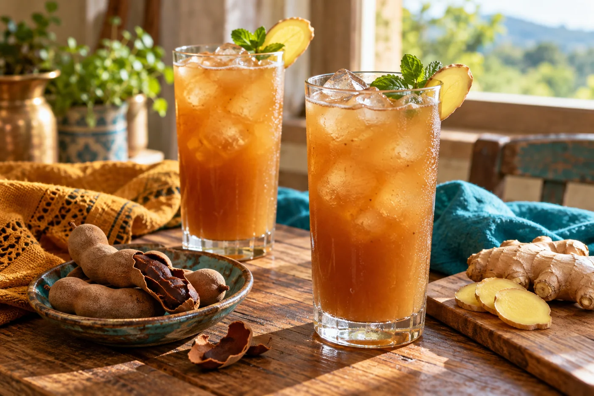
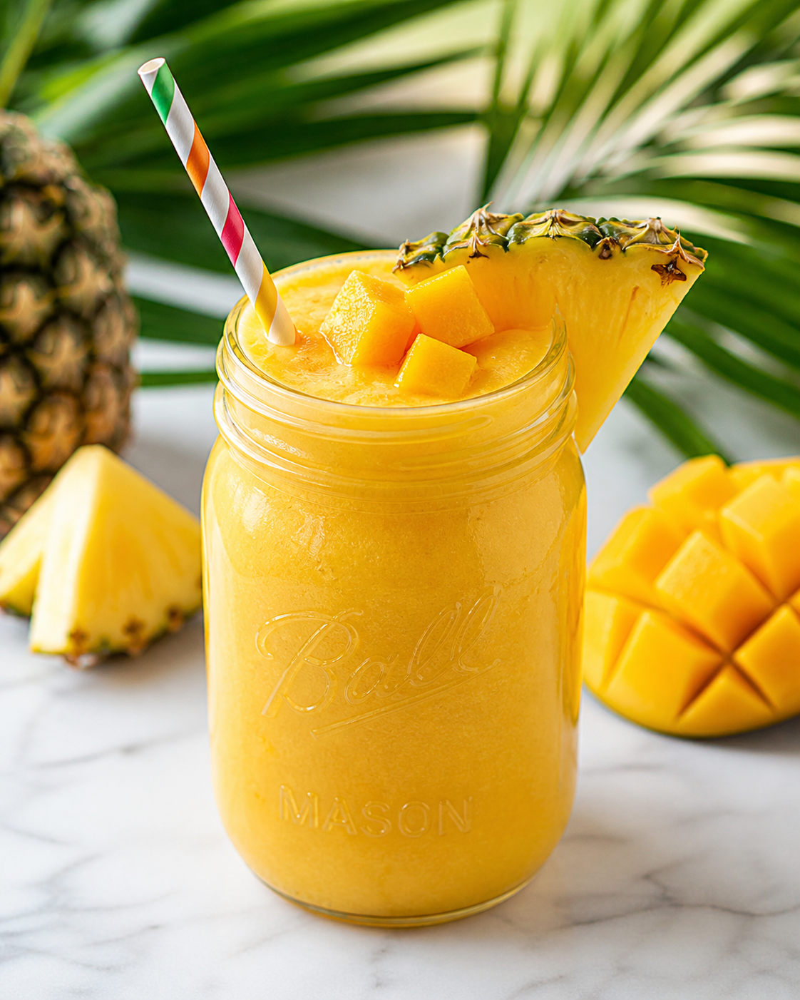
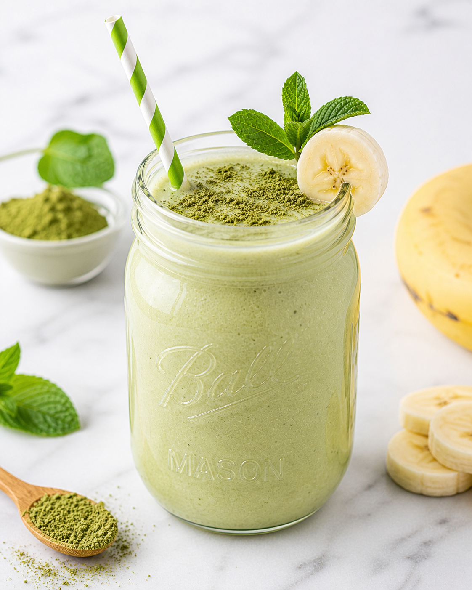

A little color.
A little comfort.
Something delicious.
Fruit-filled smoothies, bright juices, and cozy herbal teas. Pick a flavor, gather your ingredients, and make yourself something lovely.
A kitchen scrapbook, one recipe at a time.

 flowers + leaves + a little pause
flowers + leaves + a little pauseFive fresh recipes to try
A tangy cooler, tropical fruit blends, and a pumpkin oat smoothie for the season.

Tamarind Ginger Cooler
About 30 min · 4 small glasses (about 4 cups before ice)
Gather the ingredients →
Papaya Lime Smoothie Without Banana
About 10 min · 2 small glasses (about 2 cups)
Gather the ingredients →
Mango Passion Fruit Smoothie
About 10 min · 2 small glasses (about 2 cups)
Gather the ingredients →
Guava Strawberry Smoothie
About 10 min · 2 small glasses (about 2 cups)
Gather the ingredients →
Pumpkin Oat Smoothie Without Banana
About 15 min · 2 small glasses (about 2 cups)
Gather the ingredients →A cozy little tea corner
Flowers, leaves, and a glass pot. Find a herbal infusion for your next quiet moment.
Explore all herbal teas →

Find your next favorite
Browse by flavor and ingredients. Clear measurements, simple steps, and room to make each blend your own.

Spinach Cucumber Banana Smoothie

Mango Pineapple Banana Smoothie

Papaya Carrot Orange Smoothie

Berry Kefir Smoothie

Orange Lemon Ginger Drink

Matcha Banana Chia Smoothie
Spinach Cucumber Banana Smoothie
Five-minute morning reset
Cool, crisp, lightly sweet, and built for the days when you want a refreshing blend of everyday ingredients.
Blend This RecipeJuices & Drinks
Choose a bright citrus drink or a crisp vegetable blend. A blender is enough to get started.


Ginger & Citrus Sips
Small ginger and citrus drinks with clear ingredients and ways to soften the flavor.


A fresh green favorite
A cool, creamy green blend that brings together cucumber, spinach, lemon, and banana. A quick blend of fruit, greens, and fresh flavor.
- Cool cucumber and bright lemon flavor
- Use yogurt or soy milk for extra protein
- Simple ingredients · about 5 minutes
From the Blog
What would you like to make?
Pick a guide, use what you have, and make the flavor your own.
More filling smoothies
Five combinations made with familiar protein foods and no powder.
Explore smoothie ideas →A ginger shot without a juicer
Use a blender and strainer; choose a mild or punchy flavor.
See the ginger guide →Juice with a blender
Learn what to strain, what to keep, and how to use the pulp.
Try the blender method →